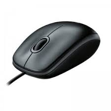

El ratón o mouse es un dispositivo apuntador utilizado para facilitar el manejo de un entorno gráfico en una computadora. Generalmente está fabricado en plástico, y se utiliza con una de las manos. Detecta su movimiento relativo en dos dimensiones por la superficie plana en la que se apoya, reflejándose habitualmente a través de un puntero, cursor o flecha en el monitor. El ratón se puede conectar de forma cableada (puertos PS/2 y USB), o inalámbricamente por medio de un adaptador USB que se conecta a la computadora y esta recibe la señal del ratón, aunque también pueden ser por medio de conectividad infrarroja o Bluetooth.
Es un periférico de entrada imprescindible en una computadora de escritorio para la mayoría de las personas, y pese a la aparición de otras tecnologías con una función similar, como la pantalla táctil, aún sigue siendo muy utilizado. Además de mover un cursor, el mouse tiene uno o más botones para permitir operaciones como la selección de un elemento de menú en una pantalla. El mouse también suele contar con otros elementos, como superficies táctiles y ruedas de desplazamiento, que permiten un control adicional y entrada dimensional.